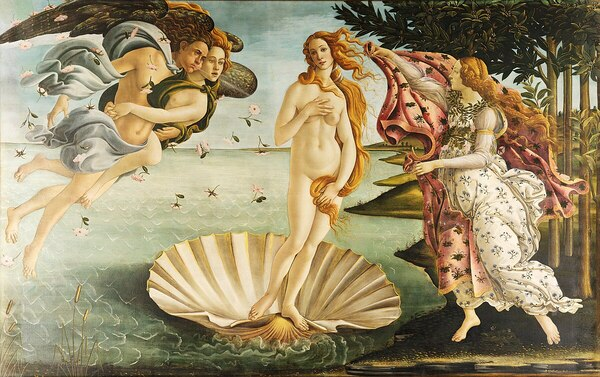

El nacimiento de Venus: cuando la belleza emergió del mar
 Dicen que la belleza nació de las olas. En El nacimiento de Venus, Sandro Botticelli capturó ese instante en que la diosa del amor se eleva sobre una concha, impulsada por el viento y bañada en luz. Pintada alrededor de 1485, esta obra se convirtió en el símbolo por excelencia del Renacimiento italiano: un tiempo en el que la mitología, el arte y la filosofía se reencontraron con la idea de lo divino en lo humano.
El pintor que convirtió la gracia en arte
Botticelli —nacido en Florencia en 1445— trabajó bajo la protección de los Médici, mecenas que impulsaron a los grandes artistas de la época. Su pintura se reconoce por la suavidad de las líneas, los rostros serenos y el movimiento poético de las figuras. A diferencia de otros maestros renacentistas, no buscaba el realismo perfecto, sino una belleza espiritual: aquella que parece flotar entre el cielo y la tierra. Curiosamente, tras su muerte, su nombre cayó en el olvido durante siglos, hasta que el siglo XIX redescubrió su arte como una joya del idealismo florentino.
Una escena que parece suspendida en el tiempo
La pintura nos muestra a Venus recién nacida, deslizándose suavemente hacia la orilla mientras los dioses del viento, Céfiro y Aura, soplan para guiarla. En la playa, una Hora —una de las diosas de las estaciones— la espera para cubrirla con un manto bordado con flores. Todo parece moverse con una calma coreografiada: las olas, los cabellos dorados, las telas que ondean al viento. El resultado es un equilibrio perfecto entre movimiento y serenidad, entre lo humano y lo divino.
Colores que respiran
Botticelli eligió tonos suaves y etéreos —azules, rosas y dorados— para crear una atmósfera de ensueño. Cada línea se curva con elegancia, desde los rizos de Venus hasta las alas de los vientos. El cuerpo de la diosa, inspirado en las esculturas clásicas, no busca la sensualidad carnal, sino una belleza idealizada, casi sagrada.
Detalles y secretos que esconde la obra
-Fue pintada al temple sobre lienzo, algo poco habitual en su época, ya que la mayoría de las obras se hacían sobre tabla.
-Se cree que el rostro de Venus pertenece a Simonetta Vespucci, la musa más admirada de Florencia.
-El cuadro formaba parte de una decoración privada encargada por la familia Médici.
-Más que una diosa, Venus representa la belleza que renueva el alma y el poder del amor como fuerza creadora.
-Hoy, la pintura se conserva en la Galería Uffizi de Florencia, donde sigue atrayendo miradas y suspiros.
La eternidad de una mirada
Cinco siglos después, El nacimiento de Venus sigue siendo una carta de amor al ideal de la belleza. Botticelli no solo pintó una diosa: pintó una idea. La idea de que el arte puede elevarnos, hacernos recordar que dentro de cada ola y de cada rostro hay algo divino que espera nacer otra vez.